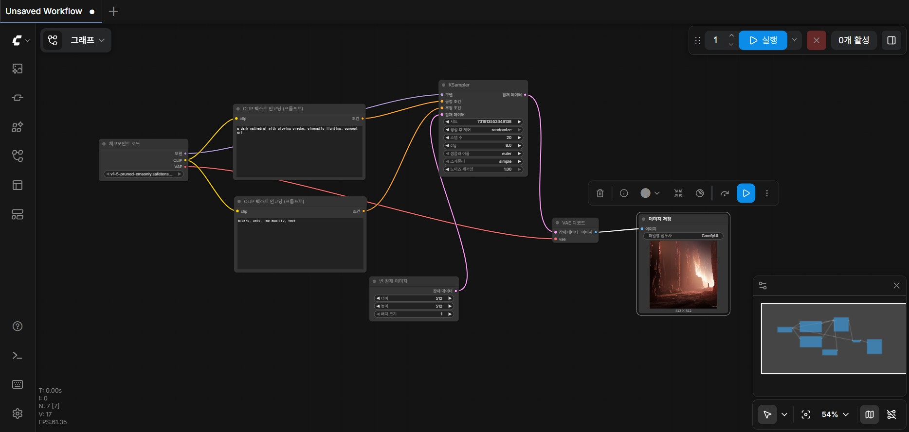

ComfyUI는 Stable Diffusion 모델을 시각적 노드 그래프로 제어하는 오픈소스 도구입니다. 텍스트 프롬프트만 입력하는 일반 AI 이미지 도구와 달리, 모델 로딩부터 샘플링, 후처리까지 전 과정을 노드로 분해하여 직접 설계할 수 있습니다.
| Midjourney / DALL-E | ComfyUI | |
|---|---|---|
| 인터페이스 | 텍스트 입력창 | 노드 그래프 |
| 제어 수준 | 프롬프트만 조절 | 전 과정 커스터마이즈 |
| 모델 선택 | 고정 | 자유롭게 교체 |
| 워크플로우 저장 | 불가 | JSON으로 저장/공유 |
| 확장성 | 제한적 | 커스텀 노드 무한 확장 |
| 비용 | 월 구독 | 무료 (오픈소스) |
| 팀 협업 | 어려움 | 워크플로우 파일 공유 |

| 모델 | Stable Diffusion v1.5 |
| 해상도 | 512 x 512 |
| Sampler | euler |
| Steps | 20 |
| CFG Scale | 8.0 |
| Scheduler | simple |
연출팀의 요청에 따라 하나의 장면을 여러 분위기로 빠르게 시각화합니다. 동일한 워크플로우에서 프롬프트와 시드값만 변경하여 3~5개의 비주얼 옵션을 30분 내에 생성할 수 있습니다.
ControlNet과 IP-Adapter 노드를 추가하면 레퍼런스 이미지의 스타일을 유지하면서 구도나 배경만 바꿀 수 있습니다. 시퀀스 전체의 비주얼 톤을 통일하는 데 필수적입니다.
스토리보드의 각 컷을 워크플로우 템플릿으로 만들어두면, 프롬프트만 교체하여 8~12컷의 프리비즈를 일관된 스타일로 빠르게 생성할 수 있습니다.
M83의 자회사 디블라트(DiBlAT)가 KIST와 공동 개발 중인 AI 프리비즈 프로그램 'MetaScene Creator'는 AI 기반 시각 자료 생성을 제작 파이프라인에 통합하는 도구입니다. ComfyUI의 노드 기반 워크플로우 설계 경험은 이러한 AI 프리비즈 도구를 이해하고 활용하는 데 직접적인 기반이 됩니다.
Text-to-Image 기본 파이프라인 구축 완료. 6개 핵심 노드(Load Checkpoint, CLIP Encode, KSampler, Empty Latent, VAE Decode, Save Image)의 역할과 연결 구조 이해. Stable Diffusion v1.5 모델로 첫 이미지 생성 성공.
SDXL / Flux 등 최신 모델 적용. 다양한 Sampler(DPM++, UniPC)와 Scheduler 비교 실험. Hires Fix, Upscale 노드를 통한 고해상도 출력. LoRA 모델로 특정 스타일 적용.
ControlNet(Canny, Depth, OpenPose)으로 구도/포즈 제어. IP-Adapter로 레퍼런스 이미지 스타일 전이. VFX 프리비즈에 필수적인 "의도한 구도로 일관된 스타일" 생성 역량 확보.
프로젝트별 워크플로우 템플릿 제작 및 관리. 배치 프로세싱으로 시퀀스 단위 대량 생성. 커스텀 노드 활용 및 팀 협업용 워크플로우 표준화.